4. Captura d'errors¶
{kind=link}
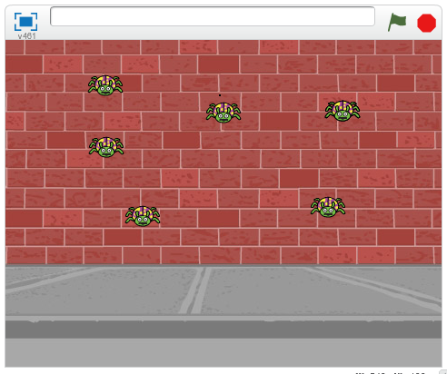
En aquesta pràctica programarem un joc que consisteix a atrapar tots els escarabats que apareixen a la pantalla. Un cop atrapats, vam guanyar el joc i un personatge ens avisa.
; BR |
Comencem el | Editor_de_scratch |.
; BR |
Eliminem el gat prement -li amb el botó dret del ratolí i, a continuació, fem clic.
; Suprimeix-Gato |
; BR |
A continuació, afegim un personatge nou, un ** escarabat **.
Premeu el botó d'objecte nou | Objecte nou |
A continuació, premem els animals de la categoria ** **.
A continuació, seleccionem l'objecte ** Ladybug2 **.
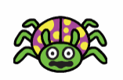
; BR |
Ara crearem la variable ** clons **
Dins de la pestanya Dades | Dades |,
Premeu Creeu una variable | Create-variable |
Canviem el nom de la variable a ** clons **
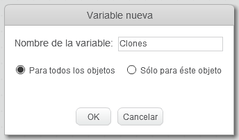
Finalment, premeu el botó ** ok **
Aquesta variable indicarà el nombre d’escarabats a la pantalla. Quan aquesta variable zero, el joc s’acabarà.
; BR |
A la pestanya Programa crearem una nova funció anomenada ** Home **
Primer fem clic al botó més blocs
; Mas-Blques |
A continuació, feu clic a Creació d’un bloc | Create-Bocate |
A continuació, canviem el nom del nou bloc a ** start **
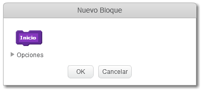
Finalment, premeu el botó ** ok **
; BR |
Ara programem la funció ** Home ** amb les següents comandes.
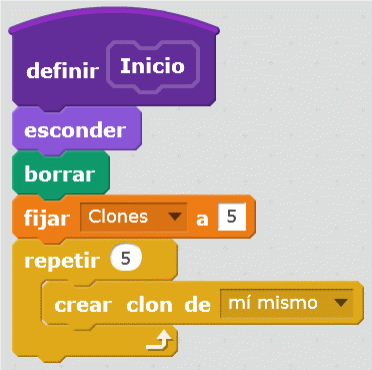
Aquest programa amaga l'escarabat, suprimeix la pantalla i posa cinc clons de l'escarabat a la pantalla.
; BR |
En aquest punt afegim les instruccions de manera que cada clon de l’escarabat aparegui en un lloc diferent de la pantalla amb mida petita. Quan el punter del ratolí toqui un escarabat, desapareixerà.
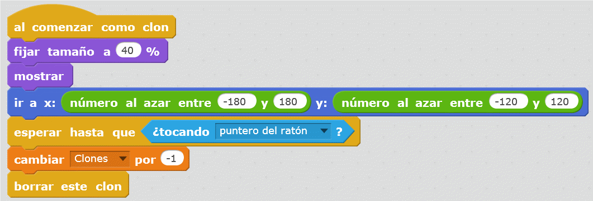
; BR |
Per comprovar que tot funciona correctament, feu clic amb doble clic i cinc escarabats apareixeran a la pantalla. Els escarabats han de desaparèixer quan el punter del ratolí els toca.
; BR |
Perquè el joc funcioni normalment, programem la funció que farà que els escarabats apareguin de tant en tant fins que el joc s’acabi.
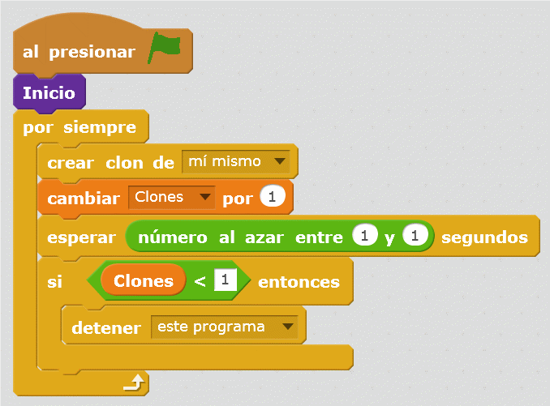
; BR |
Ara hem de triar un fons adequat per al joc. Canviem el fons escènic a una paret d’un carrer ** **.
Premeu el botó nou.
; CHANGE-SCENARY |
A continuació, fem clic al tema ** de la ciutat **.
A continuació, seleccionem el fons ** Wall de maó 1 **.
La pantalla serà la següent.
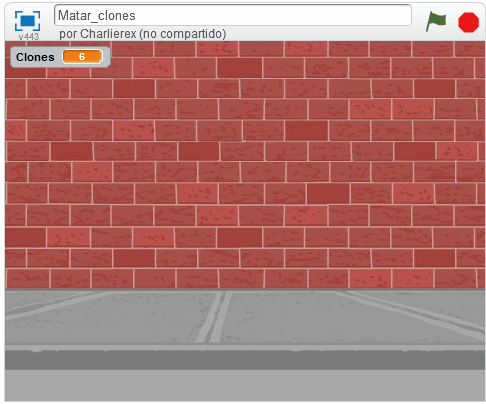
; BR |
Finalment, programem un personatge que adverteixi del final del joc. En aquest cas, s'ha escollit un ** ballarí **.
Premeu el botó d'objecte nou | Objecte nou |
A continuació, fem clic a la gent de la categoria ** **.
A continuació, seleccionem l'objecte ** Ballerina **.
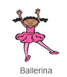
; BR |
A la pestanya del programa del nou personatge
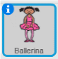
Afegiu les instruccions següents.
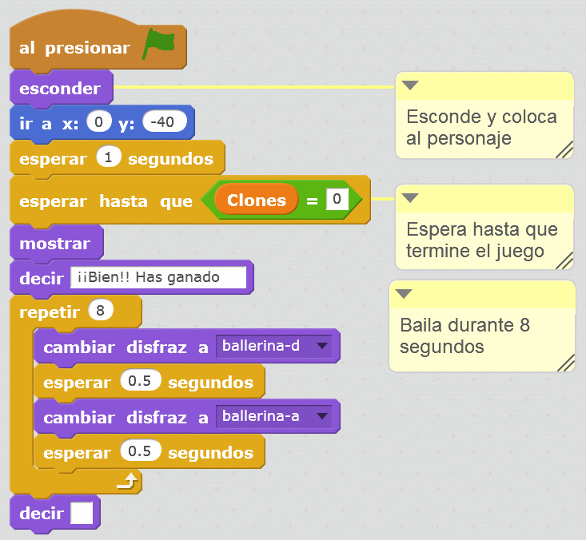
Ara, al final del programa, la ballarina sembla que ens feliciti.
; BR |
{kind=link}
{kind=link}
{kind=link}
{kind=link}
Exercicis¶
- Afegiu una nova regla al joc. Si el nombre d’escarabats és superior a 25, perdem el joc. El programa s’atura i un nou personatge ens adverteix que hem perdut.